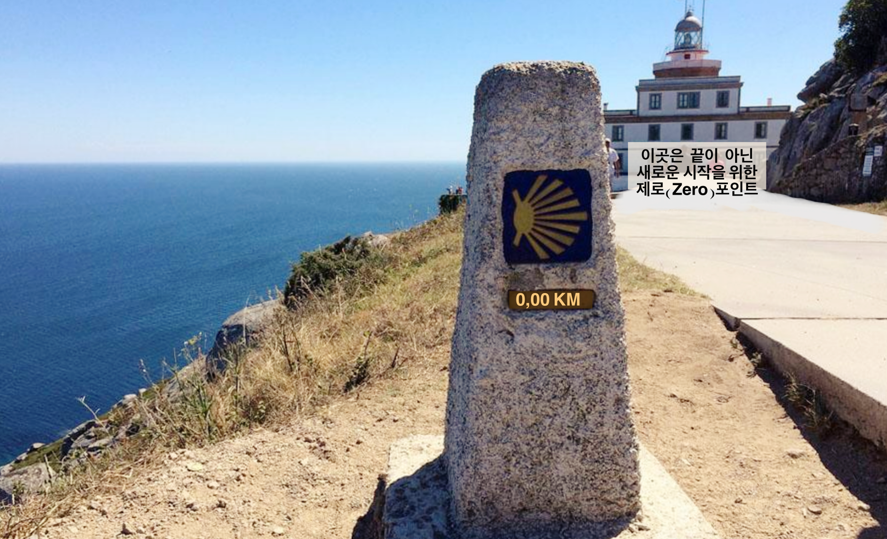
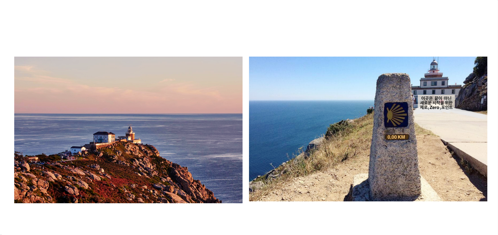

서유럽의 땅 끝은 포르투갈의 호카곶이지만, 스페인의 땅 끝은 피스테라입니다. 고대 로마인들은 이곳을 피니스 테라에(Finis Terrae), '땅의 끝'이라 불렀습니다. 대서양 너머에는 아무것도 없다고 믿었던 시대, 피스테라는 세상의 마지막 경계였습니다.
중세 순례자들은 산티아고 데 콤포스텔라 대성당에 도착한 뒤, 유럽의 서쪽 끝인 피스테라와 묵시아까지 약 90km를 더 걸었습니다. 공식 순례는 산티아고에서 끝나지만, 많은 사람의 마음속 순례는 피스테라에서 비로소 완성되었습니다. 이들은 세상의 끝에서 낡은 신발을 태우고 새 출발을 다짐하는 의식을 치르며, 성 야고보의 흔적을 따르는 진정한 여정의 마침표를 찍습니다.


그 풍경은 묘한 역설을 품고 있습니다. 세상의 끝이라 불린 장소가, 가장 많은 사람들이 다시 삶을 시작하는 장소가 된 것입니다.
야고보가 남긴 것은 '성공'이 아니라 '씨앗'이었습니다. 전승에 따르면 사도 야고보는 이베리아 반도에서 큰 성공을 거두지 못한 채 돌아갔고, 결국 순교했습니다. 그의 생애만 본다면 실패처럼 보일 수도 있습니다.
그러나 수 세기가 흐른 뒤 그의 무덤으로 전해지는 장소가 발견되면서 산티아고 순례길이 형성되었습니다. 수백만 명이 그의 이름을 따라 걷기 시작했고, 그 길은 유럽의 역사와 문화, 그리고 레콩키스타의 정신적 기반 가운데 하나가 되었습니다. 한 사람의 생애는 짧았지만, 그 영향력은 세기를 건너 계속 자라났습니다.
산티아고로 향하는 순례길은 공식적으로 지정된 것만 약 9개 이상에 달합니다. 수많은 역사적 경로가 있어 정확한 숫자를 하나로 특정하기는 어렵지만, 전 세계 순례자들이 가장 많이 찾는 대표적인 루트만 해도 여섯 개나 됩니다.
프랑스길 (Camino Francés) — 순례자들의 약 60% 이상이 선택하는 가장 대중적인 길입니다. 프랑스 생장피에드포르에서 시작해 피레네 산맥을 넘어 산티아고 데 콤포스텔라까지 이어지는 약 760~800km 코스입니다.
포르투갈길 (Camino Portugués) — 두 번째로 인기 있는 루트로, 리스본이나 포르토에서 출발합니다. 해안을 따라 걷거나 내륙 중앙을 통과하는 등 다양한 매력이 있는 길입니다.
북쪽길 (Camino del Norte) — 북부 해안을 따라 걷는 경로로, 압도적인 풍광을 자랑하지만 오르내림이 많아 체력 소모가 큽니다.
은의 길 (Vía de la Plata) — 남쪽의 세비야에서 시작해 스페인 내륙을 관통하여 올라오는 가장 긴 순례길입니다.
프리미티보길 (Camino Primitivo) — 가장 역사가 오래된 원조 순례길로, 산악 지형을 통과해 한적하고 야성적인 분위기를 느낄 수 있습니다.
영국의 길 (Camino Inglés) — 영국 순례자들이 배를 타고 북부 해안(페롤 등)에 도착해 걸었던 짧은 루트입니다.
이 밖에도 겨울길, 피니스테레·묵시아 연장길 등 수많은 지선과 역사적 경로들이 얽혀있어 '산티아고로 가는 길은 수백 개'라고도 불립니다.
산티아고 순례 길에 도착한 사람들은 모두 긴 길을 걸어온 사람들입니다. 누군가는 무엇을 이루기 위해 걸었고, 누군가는 무엇을 잊기 위해 걸었으며, 누군가는 아무 이유도 설명할 수 없는 채 그 길을 걸었습니다.
이 순례길에는 오래도록 사람들의 마음을 붙잡아 온 영화와 문학이 있습니다.
피스테라에 도착하면 누구나 하나쯤은 내려놓고 싶은 것이 있습니다. 어떤 사람은 후회를, 어떤 사람은 미련과 집착을, 어떤 사람은 끝내 전하지 못한 마음을 품고 이곳에 옵니다. 그런데 마지막에 바다 앞에 서면 이상한 일이 일어납니다.
'내가 어디까지 왔는가'보다, '이제 어떻게 살아갈 것인가'를 생각하게 됩니다. 아마 순례는 목적지에 도착하는 여행이 아니라, 다시 살아가는 법을 배우는 여행인지도 모릅니다.
앞서 만난 그 영화의 아버지도 처음에는 아들의 발자국을 따라가는 여행이었지만, 어느 순간부터 자신의 삶을 다시 걸어가는 여행이 되었습니다.
길은 누군가의 삶을 대신 살아 줄 수는 없지만
누군가의 삶을 이어받아 다시 걷게 만들 수는 있습니다.
루이스 드 카몽이스는 『오스 루지아다스』에서 대항해시대를 찬양했습니다. 하지만 그의 삶은 영광보다 상실에 가까웠습니다. 그래서 그의 바다는 단순한 승리의 바다가 아닙니다. 떠나는 사람과, 기다리는 사람, 돌아오지 못한 사람들의 시간이 함께 흐르는 바다입니다. 그 바다는 호카곶에서도, 피스테라에서도 같은 파도를 만들고 있습니다.
호카곶과 피스테라는 모두 '땅끝'입니다. 그러나 호카곶은 미지의 세계를 향해 떠나는 땅끝이라면, 피스테라는 자기 자신에게 돌아오기 위해 걷는 땅끝입니다. 한곳에서는 배가 출항했고, 다른 한곳에서는 순례자가 걸음을 멈춥니다.
하지만 두 길은 같은 질문으로 이어집니다. "한 사람의 삶은 어디에서 끝나는가?"
어쩌면 우리가 순례길을 걷는 이유도 그 때문인지 모릅니다. 우리는 땅끝을 보기 위해 걷는 것이 아니라, 시간을 건너 이어지는 수많은 사람들의 발자국 위를 함께 걷고 있는 것입니다.
이 길이 어떻게 로포텐과 호카곶으로 이어지는지는, 조금 더 깊은 자리에서 이어집니다.